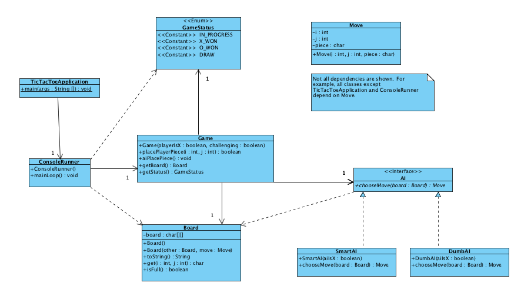
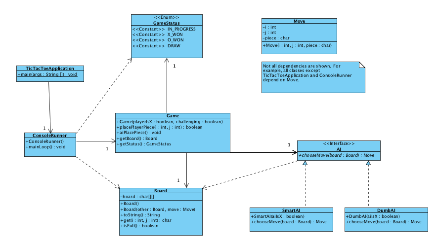
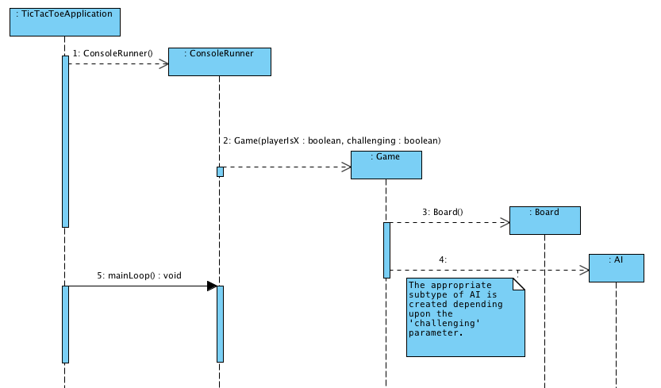
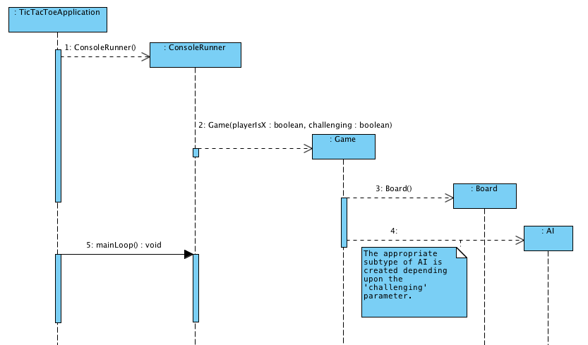
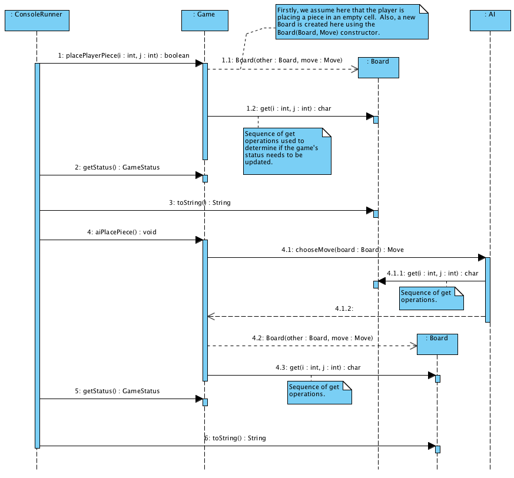

Due: Wednesday, January 20 @ 11:00 p.m.
In this assignment you will provide the implementation (in Java) for the system whose design is given below. This system provides the user the ability to play the game tic-tac-toe from the command-line. The following represents a typical output: a1_ouput.txt.
Template code that can be used for this assignment has been provided. You should replace all “TBD” comments with actual working code. Some files have been provided and require no changes (see corresponding comment in header).
Class Diagram
Complete the Java classes corresponding to all of those depicted below. You should add private members and methods to help flesh out these classes.
 

These classes have the following responsibilities:
- TicTacToeApplication: Contains the main method. Creates a ConsoleRunner and then calls its mainLoop method.
- ConsoleRunner: Prompts the user to determine the parameters of the Game constructor. Creates a Game and manages the alternating calls to the ‘place’ methods in Game. Prompts the user for inputs and outputs the state of the board to the console.
- Game: Represents the logic of the game in terms of detecting wins or draws. Also places new pieces for the human player or AI.
- Board: An immutable class that represents the state of the 3×3 tic-tac-toe board. An immutable object cannot be changed.
- GameStatus: Enum type representing the possible states of a running game.
- Move: Represents a move (by the player or the AI) to a particular cell.
- AI: Interface stipulating that an AI is a class that implements ‘chooseMove’.
- SmartAI and DumbAI: Classes realizing the AI interface using different gameplay strategies.
Sequence Diagram for Initial Object Creation
The following sequence diagram depicts how the initial objects are created.
 
Sequence Diagram for the Main Loop
The following sequence diagram shows a typical sequence of calls when the human player is represented by ‘X’. Note that in several places the Board is interrogated by a sequence of calls to ‘get’. These calls will probably occur within a loop (not shown).

Notes:
- In this version of tic-tac-toe, X always goes first.
- Utilize java.util.Scanner to parse input from the user. You need not be concerned about the user entering bad values. It is important that all console-related code be placed in ConsoleRunner.
- The user will enter the address of a cell as a pair of (x, y) coordinates. Cell (0, 0) lies in the upper-left with (2, 2) at bottom-right.
- DumbAI vs. SmartAI: For DumbAI, simply select an available position at random (use java.util.Random). Implementing the SmartAI class is not required.
- Feel free to add private members and methods (in fact, you must).
- The diagrams above do not specify everything that needs to be done! Remeber, we are using UML as sketch.
- Java features you will need to use:
- Classes Move and Board are immutable. This may surprise you for Board especially, since you have no option to modify a Board. This gives you no choice but creating a new Board for every move made using the Board(Board, Move) constructor. However, it also means that it is safe to share a Board object with other classes.
- Java Enum types
Submission
First you will need to enrol yourself in the appropriate group in Brightspace. Under “Communication” look for “A1 Groups” and enrol yourself in one. If submitting as an individual, you still need to join a group. If submitting as a pair, make sure both individuals are added to the group.
Package all .java and .class files in a zip or jar file and upload to the A1 folder. If you are doing this assignment in pairs then clearly indicate both partner names in the comments for TicTacToeApplication so that we can also see both names in the code.